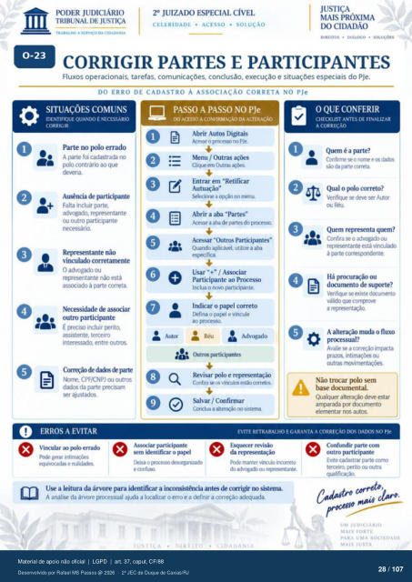

Transcrição automática em português, ainda não revisada. Confira grafia, prazos e termos jurídicos na imagem e no PDF antes de utilizar.
TRASAtM0 A SERVIÇO DA CIDADANIA
20 JUIZAIX) ESPECIAL CÍVEL
CELERIDADE • ACESSO • SOLUÇÃO
DIREITOS • DIÁLcX;o • SOLUÇÕES
CORRIGIR PARTES E PARTICIPANTES
Fluxos operacionais, tarefas, comunicações. conclusão, execução e situações especiais do PJe.
DO ERRO DE CADASTRO À ASSOCIAÇÃO CORRETA NO PJe
SITUAÇÕES COMUNS
IDENTIFIQUE QUANM) É NECESSÁRIO
CORRIGIR
1 O
e Parte no errado
A foi cadastrada M) B)lo contrário que
Ausência de participante Falta incluir parte.
advogado, representante ou outro partic$»nte
necessário. não
vinculado corretamente O advogado ou
representante está asstxiado à parte correta.
outro participante É incluir g»ritq
assistente. terceiro interessado, entre outros.
de de Nome. CPF,'CNPJ ou outros
dados da parte precisam ajustds.
PASSO A PASSO NO PJe
ACESSO À CONFIRMAÇÃO DA ALTERACÀO
Abrir Autos Digitais Acesse o prcxesw no PJe.
Menu / Outras Cliqtr em Outras
Entrar em Retificar Autuação"
Selecione a r» nmu. Abrir a aba "Partes"
Acesse a aba partes paxesso Acessar "Outros Participantes"
Quando aplicável. utilize a aba Usar "+" / Associar
Participante ao Prtxesso Inclua 0 novo participante.
Indicar o paFl correto [Mina o parrl e vincule
ao prcresso. Outrcs participantes
Revisar polo e representação Confira os virruks est*) cxrretos
Salvar / Confirmar Conclua a alter*) sistema.
O QUE CONFERIR
CHECKI.IST ANTES DE FINALIZAR
A CORREÇÃO
Quem é a Confirme se 0 norre e
da parte CMreta Qual 0 correto?
Verifique se deve ser Autor Réu
Quem representa quem? Confira se 0 ou
está vinculado à correspondente.
Há prcxuraçào ou dcxumento de suprte?
Verifiq•e existe váld) que corTVove
a represent*). A alteração muda o fluxo
Avalie se a prazos. intimaçtes ou
outras Não trtrar sem
d(.wumental. Qualquer alter*) deve estar
dcrumento elementar nos autos.
ERROS A EVITAR
Vincular ao errado R:xie gerar
e nulida:k-s
EVITE RETRABALHO E GARANTA A CORREÇÃO DAtX)S NO PJe
sem identificar 0 tk-ixa o
e confim. manter virxulo irr«reto
do Use a leitura da árvore para identificar a inconsistência antes de corrigir sisterna.
A da árvore prcressual ajuda a Icx:alizar o erro e a definir a correção Confundir parte com
outro Evite cadastrar parte como
terceiro. perito ou outra cada/..ro
UM
MAIS FOR r E
PARA UMA SOCIEDADE
Ver também o infográfico original (página 28)
